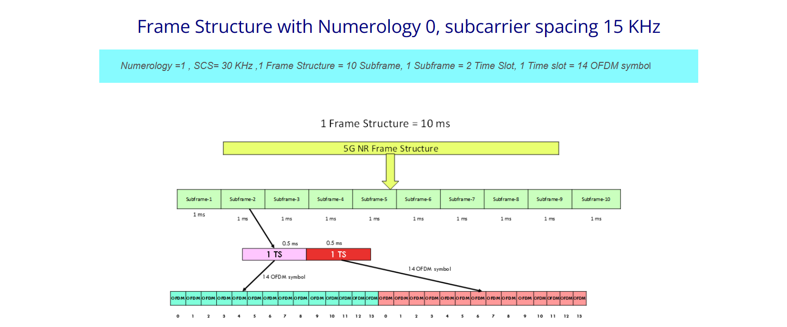

Peak Spectral Efficiency
As defined in Report ITU-R M.2514, peak spectral efficiency is the maximum data rate under ideal conditions normalized by the assigned bandwidth (in bit/s/Hz), where the maximum data rate is the received data bits assignable to a single mobile station, when up to all assignable radio resources for the corresponding link direction are utilized (i.e. excluding radio resources that are used for physical layer synchronization, reference signals or pilots and guard bands).
When only one component carrier is in use, the generic formula for peak spectral efficiency is given by:
SEp = (Vlayers × Qm × f × Rmax × (NBW, μPRB × 12)) / (Tμs × (1 - OH)) / BW
The peak spectral efficiency of NR satellite access is evaluated based on an analytical method. Unlike a terrestrial system, where conditions close to ideal be achieved, for an NTN system the minimum orbit height will result in a signal-to-noise ratio where the theoretical maximum is not achievable.
Evaluation methodology- The proponent should report the peak spectral efficiencies achievable by the candidate RITs/SRITs and identify the assumed frequency band(s) of operation and the assigned DL and UL bandwidths in that(those) band(s). Proponents should demonstrate that the peak spectral efficiency requirement can be met for, at least, one declared carrier frequency.
The evaluation assumptions for the ideal conditions can be found in the following table-
| Parameter | DL | UL | Remarks |
|---|---|---|---|
| Max. coding rate Rmax | [666/1024 - 822/1024] | [434/1024 - 553/1024] | |
| Max. number of layers vLayers | 1 | ||
| Highest modulation order Qm | 6 | 4 | DL: 64QAM, UL: 16QAM |
| Scaling factor of modulation ff | 1 | ||
| Numerology μμ | 0 | SCS = 15 kHz | |
| Maximum RB allocation NBW, μPRB | 160 | 8 | For UL, 8 PRBs out of the full bandwidth is assigned per UE |
| Overhead (OH) | 0.14 | 0.08 | See 38.306, clause 4.1.2 |
| Elevation angle | 90° | ||
| Orbit height [km] | 600 | ||
| Frequency [GHz] | 2.00 | ||
| TX: EIRP [dBm] | 78.77 | 23.00 | |
| RX: G/T [dB/T] | -31.62 | 1.10 | |
| Atmospheric loss [dB] | 0 | ||
| Shadow fading margin [dB] | 0 | ||
| Scintillation loss [dB] | 0 | ||
| Polarization loss [dB] | 0 | ||
| Additional losses [dB] | 0 |
The evaluation results for NR Satellite Access Peak spectral efficiency for DL and UL can be found in the below table-
| Link | Min. Requirement | SCS [kHz] | BW [MHz/RB] | Peak Spectral Efficiency (bits/s/Hz) |
|---|---|---|---|---|
| DL | 3 | 15 | 30 / 160 | 3.71 |
| UL | 1.5 | 15 | 1.44 / 8 | 1.85 |
Based on the above analysis, NR satellite access fulfils peak spectral efficiency requirement for both DL and UL.
Peak Data Rate
Peak data rate for NR NTN is evaluated based on the evaluation results of NR satellite access peak spectral efficiency provided in the below section. Using the analytical way as provided in Report ITU-R M.2514, DL peak data rate is calculated as:
Rp = Wa × SEp
Evaluation Methodology- The proponent should report the peak data rate values achievable by the candidate RITs/SRITs and identify the assumed frequency band(s) of operation and the assigned DL and UL bandwidths in that(those) band(s). Proponents should demonstrate that the peak data rate requirement can be met for, at least, one declared carrier frequency. Suitable evaluation parameters should be used and reported by the proponent, using examples provided in § 8.2 [Report ITU-R M.2514] (associated to the Rural-eMBB-s test environment) as needed.
The minimum requirement and evaluation results for peak data rate for DL and UL can be found in the below table.
| Link | Min. Requirement | SCS [kHz] | BW [MHz/RB] | Peak data rate (Mbit/s) |
|---|---|---|---|---|
| DL | 70 | 15 | 30 / 160 | 111 |
| UL | 2 | 15 | 1.44 / 8 | 2.67 |
Based on the above analysis, NR satellite access fulfils peak data rate requirements for both DL and UL.
